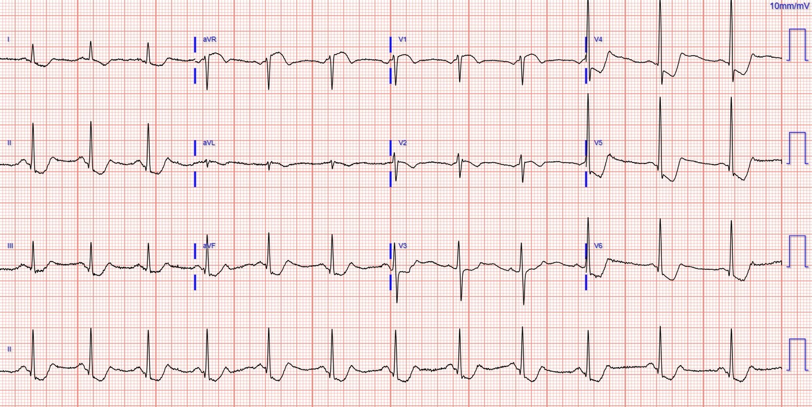
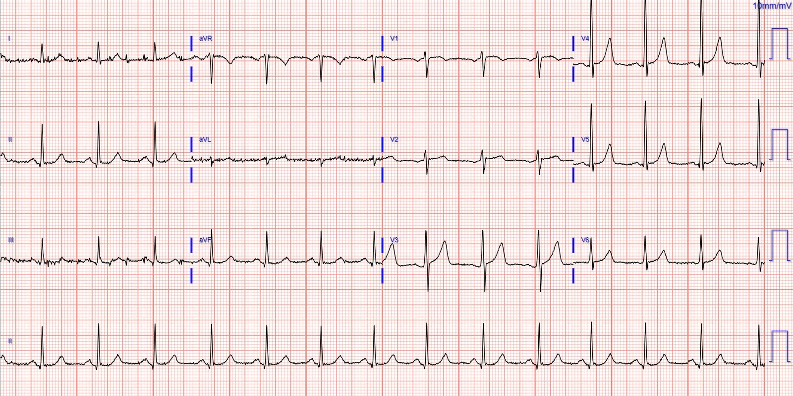
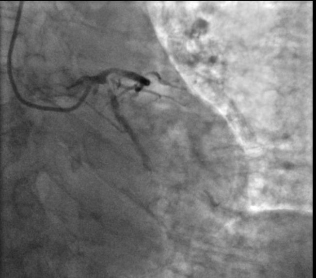
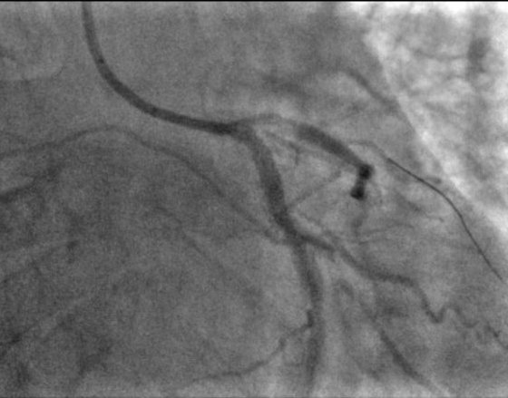
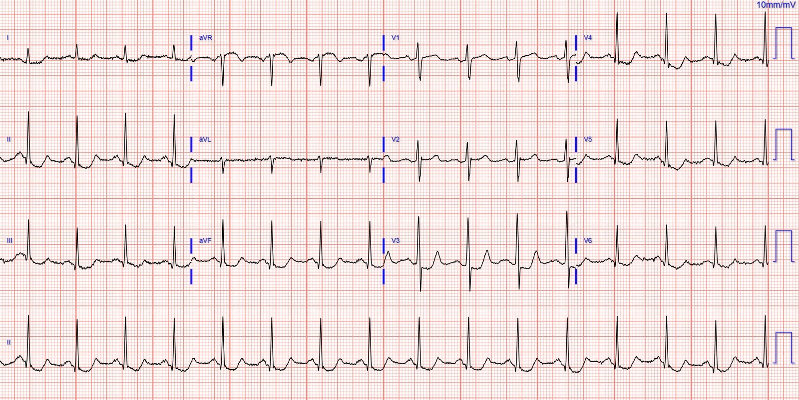
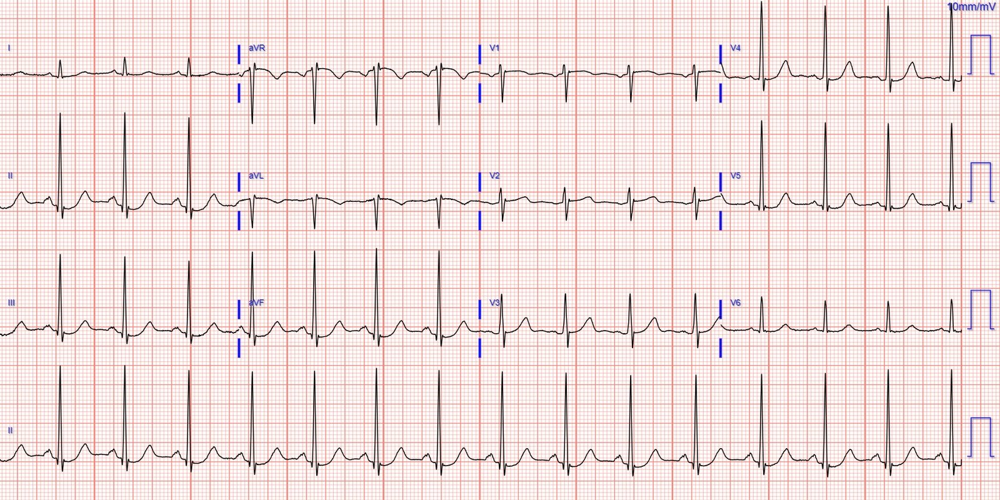
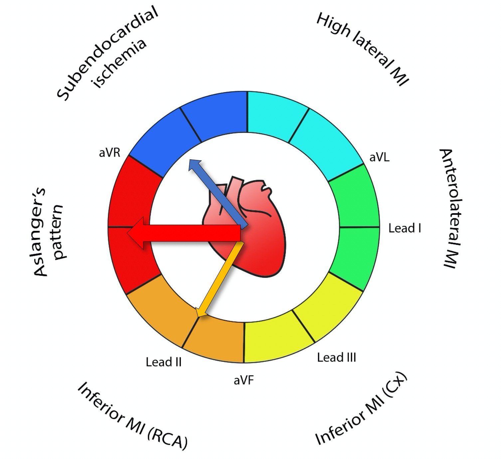
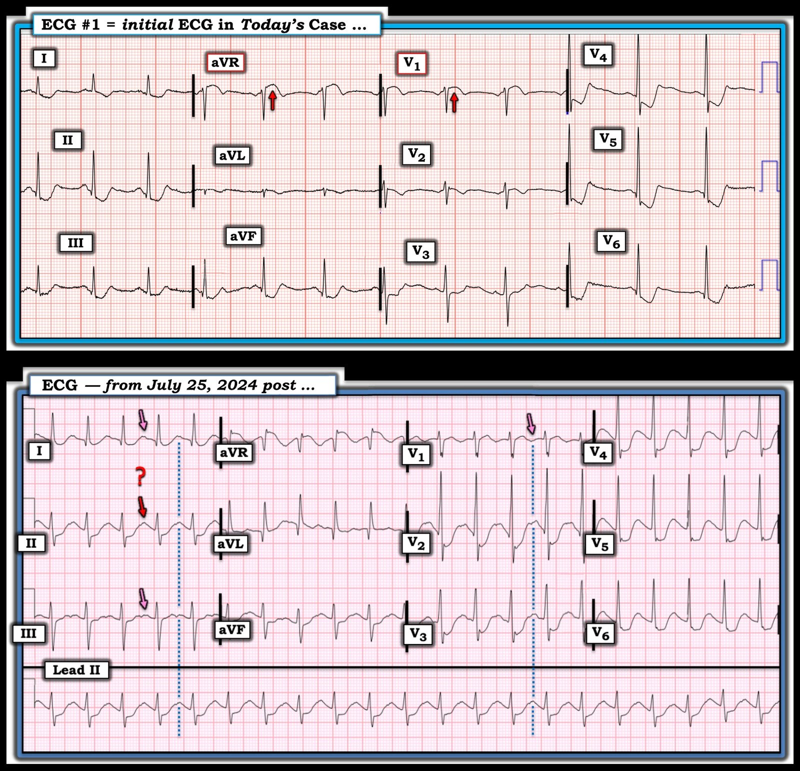

31/12/2024 — OMI? Thiếu máu cục bộ dưới nội tâm mạc? Điều đó có quan trọng trong bối cảnh lâm sàng này không?
Bản dịch tiếng Việt của bài "OMI? Subendocardial ischemia? Does it matter in this clinical context?" – Dr. Smith’s ECG Blog. Giữ nguyên toàn bộ 9 hình ảnh của bản gốc.
Tác giả: Pendell Meyers
Một phụ nữ ngoài 70 tuổi, có tiền sử bệnh động mạch vành đã biết, bị đau ngực cấp và khó thở. Cơn đau ngực được mô tả là cảm giác đè ép dữ dội, lan lên cả hai vai. Các dấu hiệu sinh tồn trong giới hạn bình thường.
Bà đến khoa cấp cứu (ED) vào khoảng 3,5 giờ sau khi khởi phát triệu chứng. Bà đã uống aspirin ở nhà.
Đây là điện tâm đồ lúc phân loại (triage) của bà:


Điện tâm đồ cho thấy nhịp xoang với hình dạng phức bộ QRS bình thường và hình ảnh thiếu máu cục bộ dưới nội tâm mạc (subendocardial ischemia, SEI) rõ rệt (ST chênh xuống ở nhiều chuyển đạo, nặng nhất ở vùng bên, bao gồm các chuyển đạo II, V5-6, kèm ST chênh lên (STE) soi gương ở aVR). Người ta có thể tranh luận hoặc băn khoăn liệu ở đây có cả thiếu máu cục bộ dưới nội tâm mạc LẪN hình ảnh OMI thành sau hay không, vì ST chênh xuống (STD) ở V4 có thể ngang bằng, hoặc có thể nặng hơn một chút xét theo tỷ lệ, so với V6.
Nhưng may mắn là, khi bối cảnh lâm sàng rõ ràng và rất đáng lo ngại về thiếu máu cục bộ đang diễn ra do hội chứng vành cấp (ACS), sự phân biệt này không còn quan trọng lắm. Dù điện tâm đồ cho thấy hình ảnh OMI, SEI, cả hai, hay không có cái nào, thì bệnh nhân đang bị thiếu máu cục bộ tiến triển vẫn cần được cân nhắc điều trị tái tưới máu cấp cứu.
Queen of Hearts hoàn toàn không được biết bối cảnh lâm sàng, và một mô hình sắp ra mắt (có thể báo cáo riêng OMI và SEI) đã nhận diện SEI với độ tin cậy cao.
Mặc dù trong ca này không nhất thiết phải có điện tâm đồ nền trước đó, nhưng bà vẫn có sẵn một bản:


Bệnh sử và điện tâm đồ của bà được nhận định là rất đáng lo ngại về hội chứng vành cấp, có thể có lợi từ điều trị tái tưới máu cấp.
Không ghi chuyển đạo phía sau.
Bà được chuyển cấp cứu đến một trung tâm có PCI.
Tại phòng thông tim (cath lab), bà được phát hiện có bệnh nhiều nhánh mạch vành nặng, và lỗ xuất phát (ostial) của động mạch mũ được mô tả là tổn thương thủ phạm. Ghi chép thủ thuật cho biết lần chụp đầu tiên LCX hẹp 99%, dòng chảy TIMI 2, nhưng sau đó (trước khi can thiệp) người ta thấy động mạch tắc hoàn toàn ngay trong lúc quan sát (100%, TIMI 0). Ngay sau khi chứng kiến tắc mạch, bệnh nhân bị ngừng tim do rung thất, và được hồi sức thành công ngay lập tức bằng 1 lần khử rung. Thủ thuật được mô tả là rất phức tạp do bệnh mạch vành (CAD) nhiều nhánh nặng, nhưng cuối cùng PCI đã được thực hiện thành công vào lỗ xuất phát LCX. Ghi chép cũng nêu rằng các mạch khác có thể cần PCI theo giai đoạn sau đó và tán sỏi nội mạch (intravascular lithotripsy).




Đây là điện tâm đồ của bà trong vòng 30 phút sau PCI:


Đây là điện tâm đồ của bà 8 giờ sau đó:


Troponin I độ nhạy cao:
(giá trị nền trước đây trong giới hạn bình thường)
185 ng/L
638 ng/L
13.916 ng/L
(không đo thêm)
Siêu âm tim:
EF 45%, giảm động thành dưới và các đoạn sau-bên từ đáy đến giữa.
Chẩn đoán cuối cùng: “STEMI” (tất nhiên, như bạn có thể thấy trên các điện tâm đồ ở trên, điều này không đúng, theo định nghĩa thì đây là NSTEMI. Nhưng “chẩn đoán cuối cùng” thường chỉ phản ánh việc bệnh nhân có được điều trị cấp cứu hay không, bất kể định nghĩa STEMI/NSTEMI).
Nói cách khác, số milimét thực sự không quan trọng!
Smith: Hình ảnh SEI này là hình ảnh của thiếu máu cục bộ dưới nội tâm mạc toàn bộ (global), không phải của thiếu máu cục bộ xuyên thành. Vectơ ST chênh xuống hướng về chuyển đạo II, nên vectơ ST chênh lên hướng về aVR. ST chênh lên ở aVR này KHÔNG tương đương với ST chênh lên của STEMI/OMI, vì không có thành thất nào tương ứng với aVR – ở phía trên (hay “đáy”) của tim chỉ có các tâm nhĩ. ST chênh lên này là ST chênh lên SOI GƯƠNG, soi gương với ST chênh xuống.
Hình ảnh SEI này thường được quy cho “Tắc thân chung động mạch vành trái”. Quan niệm này là sai lầm. Bệnh nhân bị tắc hoàn toàn thân chung động mạch vành trái thường tử vong trước khi đến khoa cấp cứu. Khi họ không tử vong, có nhiều hình ảnh điện tâm đồ khác nhau, được trình bày trong bài viết bên dưới. Hình ảnh này quả thực phù hợp với thiếu máu cục bộ thân chung trái (động mạch còn thông nhưng dòng chảy không đủ), nhưng nó cũng phù hợp với thiếu máu cục bộ do LAD tắc gần hoàn toàn, và thậm chí với tổn thương thủ phạm ở bất kỳ nhánh nào trong 3 động mạch vành thượng tâm mạc kèm hẹp ở các nhánh còn lại (“ACS 3 nhánh”).
Ngoài ra, nếu chúng ta có một điện tâm đồ được ghi trong lúc động mạch mũ tắc hoàn toàn với dòng chảy TIMI-0, nhiều khả năng nó sẽ cho thấy hình ảnh Aslanger, tức là OMI thành dưới cộng với SEI xảy ra đồng thời. Với SEI đơn thuần, vectơ ST chênh xuống sẽ hướng về chuyển đạo II (nên vectơ ST chênh lên hướng về aVR), nhưng khi tắc động mạch mũ, sẽ có thêm một vectơ ST chênh lên hướng về chuyển đạo III. Vectơ tổng hợp hướng đúng sang phải, đến mức các chuyển đạo duy nhất có ST chênh lên là III và aVR. Đây không phải là các chuyển đạo “liên tiếp”, nên chỉ có một chuyển đạo duy nhất có ST chênh lên và nó thường không đạt 1 mm.
Hình ảnh này được định nghĩa như sau:
(1) có ST chênh lên bất kỳ mức nào ở chuyển đạo III nhưng không có ở các chuyển đạo thành dưới khác,
(2) ST chênh xuống ở bất kỳ chuyển đạo nào từ V4 đến V6 (nhưng không có ở V2) kèm sóng T dương hoặc phần cuối sóng T dương,
(3) ST ở chuyển đạo V1 cao hơn ST ở V2
Hình này cho thấy vectơ ST trong hình ảnh Aslanger:


Xem bài này để biết 8 ca tắc hoàn toàn thân chung động mạch vành trái: How does Acute Total Left Main Coronary occlusion present on the ECG? (Tắc cấp hoàn toàn thân chung động mạch vành trái biểu hiện thế nào trên điện tâm đồ?)
Hãy xem điều gì xảy ra khi một huyết khối ở thân chung trái tiến triển từ tắc gần hoàn toàn sang tắc hoàn toàn.

===================================
BÌNH LUẬN CỦA TÔI, bởi KEN GRAUER, MD (31/12/2024):
===================================
Việc đánh giá ca hôm nay nên nhanh gọn và đi thẳng vào trọng tâm.
- Bệnh nhân là một phụ nữ lớn tuổi có bệnh mạch vành đã biết — đến khám vì đau ngực – CP (Chest Pain) dữ dội kéo dài 3,5 giờ.
- Như Dr. Meyers đã nêu — điện tâm đồ ban đầu của bệnh nhân (bản ghi PHÍA TRÊN trong Hình 1) — cho thấy nhịp xoang — ST chênh xuống lan tỏa (ở đây thấy ở 8/12 chuyển đạo) kèm ST chênh lên ở chuyển đạo aVR > V1 (các mũi tên ĐỎ ở aVR, V1).
Như đã được nhấn mạnh nhiều lần trên Dr. Smith’s ECG Blog (Xem Bình luận của tôi trong bài ngày 25 tháng Bảy năm 2024 và bài ngày 1 tháng Ba năm 2023) — “bức tranh” điện tâm đồ mà chúng ta thấy ở Hình 1 của ca hôm nay cho thấy một nhịp trên thất với ST chênh xuống lan tỏa — ngoại trừ ST chênh lên thấy ở chuyển đạo aVR (và ở mức độ ít hơn ở chuyển đạo V1). Bức tranh này định nghĩa thực thể lâm sàng được gọi là DSI (thiếu máu cục bộ dưới nội tâm mạc lan tỏa – Diffuse Subendocardial Ischemia). Nhận ra DSI có nghĩa là chúng ta cần cân nhắc 2 Nhóm thực thể chẩn đoán thường tạo ra bức tranh này:
- Nhóm #1: Bệnh mạch vành nặng (do thân chung trái, LAD đoạn gần, và/hoặc bệnh 2 hoặc 3 nhánh mạch vành nặng) — mà trong bối cảnh lâm sàng phù hợp có thể chỉ ra ACS (hội chứng vành cấp – Acute Coronary Syndrome).
- Nhóm #2: Thiếu máu cục bộ dưới nội tâm mạc do một nguyên nhân khác (tức là nhịp nhanh kéo dài — dù là nhịp nhanh xoang hay một rối loạn nhịp nào khác; sốc hoặc tụt huyết áp nặng; suy hô hấp; xuất huyết tiêu hóa; thiếu máu, “bệnh nhân nặng”, v.v.).
Những điểm MẤU CHỐT:
- DSI không chỉ ra tắc cấp động mạch vành! Mặc dù đúng là nhiều bệnh nhân DSI có bệnh mạch vành nặng — nhìn chung họ không bị tắc cấp động mạch vành vào thời điểm được khám (mặc dù ca hôm nay minh họa một bệnh nhân đã bị tắc cấp động mạch vành sau khi ghi điện tâm đồ #1, trong lúc đang tiến hành thông tim).
- Dù vậy, tùy theo bối cảnh lâm sàng — một số lượng đáng kể bệnh nhân đến khám với bức tranh điện tâm đồ của DSI rốt cuộc lại không có nguyên nhân là bệnh mạch vành.
2 điện tâm đồ trong Hình 1 minh họa những khái niệm MẤU CHỐT này:
- Trong ca hôm nay, vì bệnh nhân là một phụ nữ lớn tuổi có bệnh mạch vành đã biết — đến khám vì đau ngực mới xuất hiện — nên bệnh mạch vành nặng (tức là Nhóm #1) gần như chắc chắn là nguyên nhân của hình ảnh DSI mà chúng ta thấy trên điện tâm đồ #1.
- Ngược lại, mặc dù bản ghi PHÍA DƯỚI trong Hình 1 cũng có hình ảnh DSI (tức là ST chênh xuống lan tỏa và ST chênh lên ở aVR>V1) — các thực thể không phải bệnh mạch vành được liệt kê trong Nhóm #2 cần được cân nhắc nghiêm túc vì có nhịp nhanh! Điện tâm đồ này được lấy từ bài ngày 25 tháng Bảy năm 2024 trên Dr. Smith’s ECG Blog. Bệnh nhân là một người trưởng thành trẻ tuổi bị quá liều thuốc và ngừng thở, dẫn đến nhịp nhanh xoang mà chúng ta thấy trên bản ghi phía dưới này (các mũi tên HỒNG đánh dấu sóng P xoang ở các chuyển đạo khác — vì tần số nhanh khiến sóng P ở chuyển đạo II khó nhận ra).
Thông điệp “cần nhớ” của ca hôm nay:
- Hình ảnh điện tâm đồ của DSI thường dễ nhận ra — vì trong một nhịp trên thất, có ST chênh xuống lan tỏa (thường ở ít nhất 6 chuyển đạo — thường rõ nhất ở các chuyển đạo trước tim bên) — đi kèm với ST chênh lên ở chuyển đạo aVR>V1.
- Hình ảnh DSI này không có nghĩa là có tắc cấp động mạch vành.
- Nhiều (nhưng không phải tất cả) bệnh nhân DSI có bệnh mạch vành nặng.
- Sự hiện diện của nhịp nhanh đi kèm với hình ảnh điện tâm đồ của DSI là một manh mối cho thấy nguyên nhân có thể không phải là bệnh mạch vành nặng mà là một hoặc nhiều thực thể được liệt kê ở trên trong Nhóm #2.
- Và, như Dr. Smith đã nêu ở trên — ST chênh lên ở chuyển đạo III (nhưng không có ở các chuyển đạo thành dưới khác) — đi kèm với một hình ảnh mà ngoài ra phù hợp với DSI — gợi ý hình ảnh Aslanger, trong đó có OMI thành dưới cộng với bệnh nặng ở các nhánh mạch vành khác.

